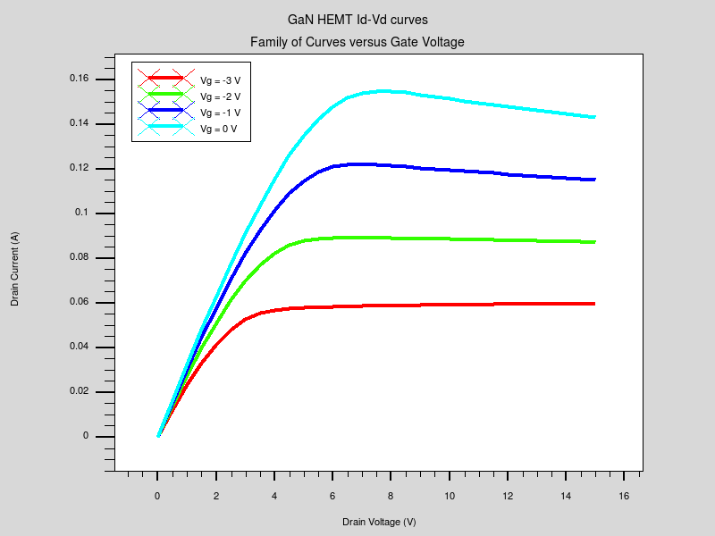
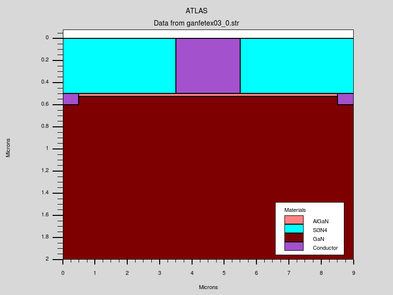
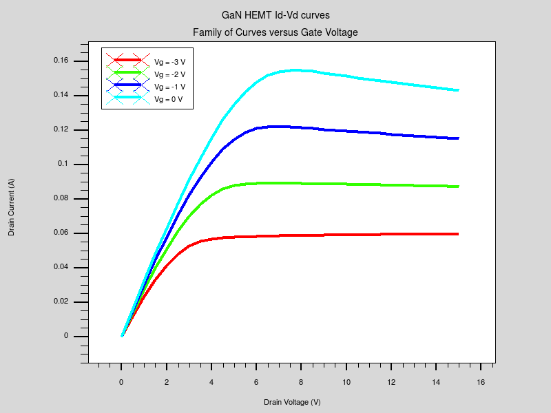
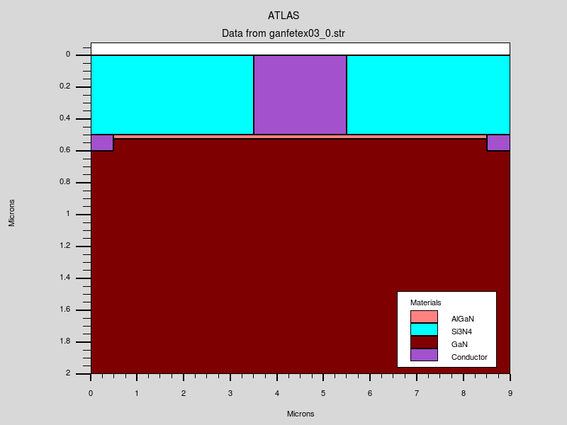
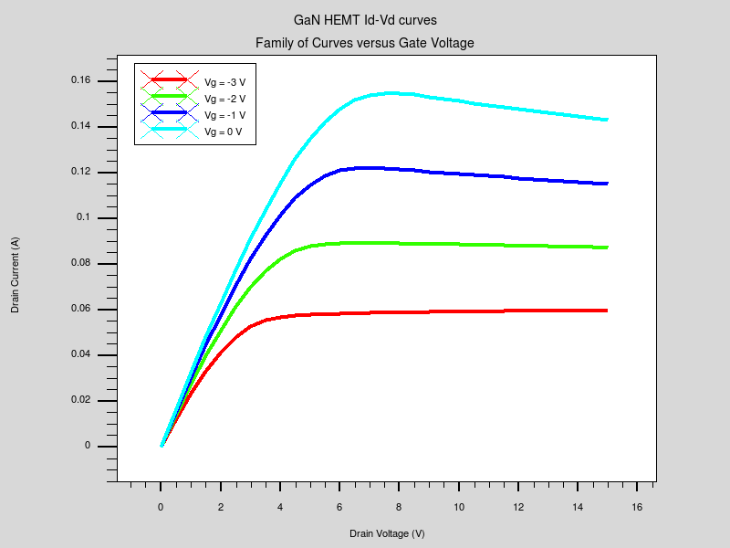
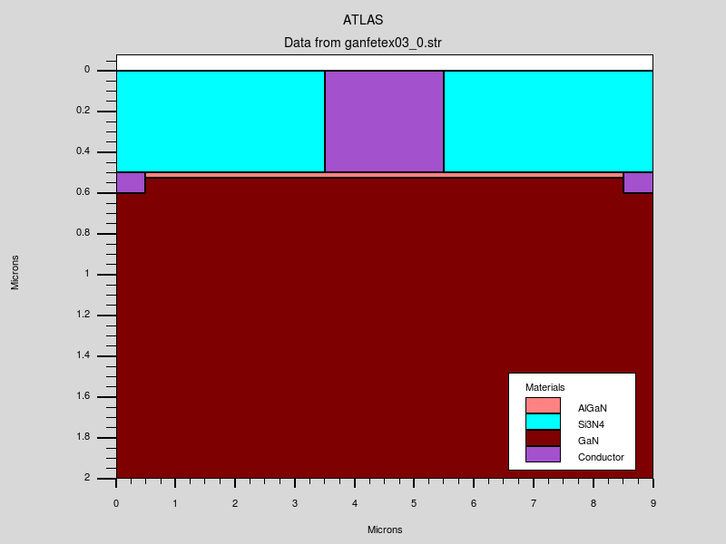

| Requires: | Blaze |
| Minimum Versions: | Atlas 5.26.1.R |


This example demonstrates Id-Vds and Id-Vgs calculations in an AlGaN/GaN HEMT.
This example demonstrates:
The device under consideration is a simple AlGaN/GaN HEMT. The main concept here is that the polarization charge is calculated using the built-in models as specified by the polarization parameter on the model statement.
After the initial solution is obtained the gate voltage is ramped to -10 V, then the IdVg characteristic is extracted from Vg=-10 to Vg=1.0 V.
A family of drain current characteristics are then simulated with and without lattice heating taken into account by ramping the drain from 0 to 15 V at various gate voltages.
Finally, the family of curves is plotted using the TonyPlot tool.
To load and run this example, select the Load button in DeckBuild > Examples. This will copy the input file and any support files to your current working directory. Select the Run button in DeckBuild to execute the example.